Hune
Grobkörniger, grauer Granit
Höhe über der Erde: 140 cm
Größte Breite: 72 cm
Größte Dicke: 42 cm
Runenhöhe: 9 bis 11,5 cm
Runeninschrift :
Hove, Thorkil (und) Thorbiorn setzten den Stein Runulfs des Ratsweisen, ihres Vaters
25 - Hune - Letztes Update 17.08.2025
Listennummer : DR 161 / DK NJy 11
| Navidaten: 57.25094 9.61798 oder: Kirkevej 11, 9492 Blokhus |
Inschrift: hufi : þurkil : þurbiurn : satu : stin : runulfs : hins : raþ:sbaka : | : faþur : sins :
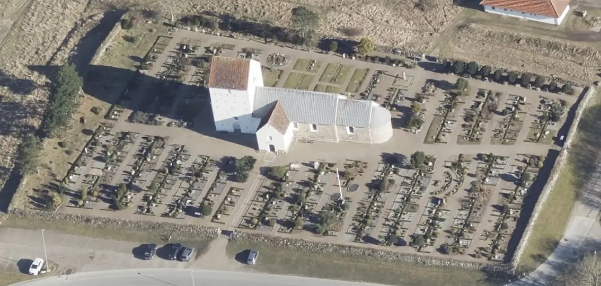
Das ist ein Luftfoto vom 02.04.2023 von Skråfoto das die Kirche von Hune zeigt. Skråfoto ist eine Webanwendung, die von Klimadatastyrelsen weltweit kostenlos bereitgestellt wird - Freie Nutzung unter Beachtung der Lizenz: CC BY 4.0.. Die Aufnahmen werden seit 2017 alle zwei Jahre erneuert und neben einer Senkrechtaufnahme wird ein Schrägbild aus jeder Himmelsrichtung angeboten, das man über eine Adresssuche aufrufen kann.
Im Rahmen meiner 2022er Jütland Wikingertour war ich am Donnerstag, 02.06.2022, vor Ort. Zuvor hatte ich die Hune Kirche erstmals am Dienstag, 02.08.1988, dann am Samstag, 10.08.1996, und nochmals am Samstag, 01.07.2000 besucht. Das Foto im linken Frame stammt aus dem Sommer 1996. Diesmal hatte ich viel Zeit und habe die Kirche und den Runenstein ausführlich betrachtet. Diese Fotos konnte ich dabei machen.
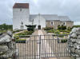 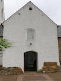 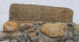 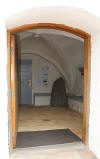 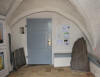 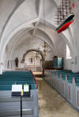 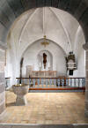
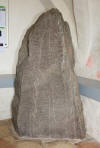 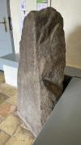 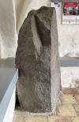 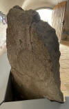 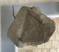
Die Kirche wurde um 1100 aus Granitquadersteinen erbaut. Sie lag immer einsam und frei auf einer Anhöhe. Der Ort bestand immer schon und bis weit in das 19. Jahrhundert hinein nur aus einzelnen Häusern. Die Gemeinde war bis zum Eintreten des großen Sandtreibens sehr wohlhabend. Es hielt annähernd 300 Jahre an und war stets eine Bedrohung für die Gemeinde und die Kirche. Im Jahr 1648 musste die Gemeinde z.B. 24 Wagen mieten, um den Sand um die Kirche abzutransportieren. Etwa 150 Jahre später waren große Dünen bis vor die Kirche getrieben, so dass die Hirtenjungen von den Dünen auf das Kirchendach springen konnten! Vor dem Eingang ist ein schöner Grabstein aus romanischer Zeit in die Wand eingelassen. Der Steinaltar ist so alt wie Kirche selbst. Die Ausstattung ist schlicht.
Eine 12-seitige Broschüre in deutscher Sprache "Die Kirche von Hune. Eine Kirche in offener Landschaft" liegt im Foyer der Kirche auf, woraus ich die o.a. Informationen entnommen habe.
Der Runenstein stand vermutlich ursprünglich am Altertumsweg von Hune nach Jetsmark. Um das Jahr 1550 wurde er wohl wegen der zunehmenden Sandstürme in Nordjütland zur Kirche von Hune verbracht und dort aufgestellt. Auszug aus einem Online Artikel des Deutschlandfunk: "Dann war diese Katastrophe eingetroffen um 1550, das begann eigentlich als eine kleine Eiszeit. Mit der Eiszeit kam auch Flugsand. Orkanartige Stürme und dann war dieser Flugsand überall. Und nach 200 Jahren war alles begraben unter fünf Metern Sand. Also hier unten sind Häuser, alles wie in Pompei.
Älteren Berichten zufolge blieb der Runenstein dort auch, bis er 1940 seinen jetzigen Platz im Waffenhaus der Kirche von Hune erhielt. Dort ist er in einer Ecke, teilweise in die Erde eingelassen, aufgestellt worden.
Durch diese Art der Aufstellung sind heute die drei untersten Runen der linken Reihe und die unterste der mittleren Reihe unter der Erdoberfläche.
Ob der in der Runeninschrift genannte Hove mit dem Hove auf dem benachbarten Jetsmarkstein identisch ist, ist wahrscheinlich aber nicht erwiesen. Die Namen des Brüderpaars Thorkil und Thorbiorn sind unter den dänischen Runensteinen einmalig. Der Runenstein wird in die Zeit von 970 bis 1020 datiert. Die Inschrift verläuft in der sogenannten Konturanordnung. Sie beginnt unten links und endet in einem kurzen Band in der Mitte des Steins von unten nach oben gelesen.
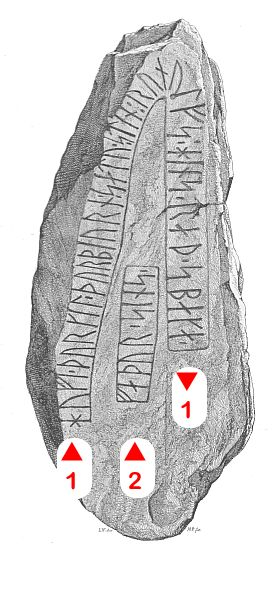
Bildquelle: Zeichnung von Magnus Petersen von 1878 - Leserichtung von mir eingezeichnet.Die älteste bekannte Darstellung stammt von Jon Skonvig (*1600 - 1664, Pfarrer und der Runenzeichner für Ole Worm) aus dem Jahre 1627.
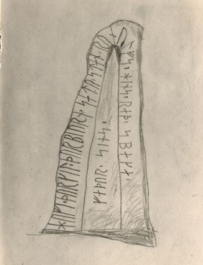
Höhe: 13 cm im Original - Sein Text dazu: "Dette Monumentum Findiss Vdi Aalborg stifft Vdi huetboe-heritt Ved Hune kircke vdi den sÿnder Kircke stette och Er en haard graa Kamp 2½ all:hoi, offuen Jorden och En all bred, En Halff all tÿck".
Übersetzung: "Diesen Runenstein findet man im Aalborg Stift, Hvetbo Harde, bei der Hune Kirche. Südlich der Kirche steht ein harter, grauer Felsbrocken, 2½ Ellen hoch, über dem Erdboden eine Elle breit und eine halbe Elle dick - Anm.: 1 Elle = 62,77 cm."
Der Digitalen Sammlung des Nationalmuseums Kopenhagen entlehnt - Lizenz: Public Domain
Die Aufzeichnungen - sechs Handschriften - von Jon Skonvig wurden nach und nach digitalisert und ins Internet eingestellt. In der sogenannten "Arnamagnæanske samling, A.M. 366-371 fol." (zu deutsch: Arnamagnäanische Sammlung) finden diese sich heute wieder.
Die entsprechende Seite 9v der AM 367 fol., die die Runensteinzeichnung und die dazu von Jon Skonvig angefertigten Aufzeichnungen zeigt, sieht man hier.
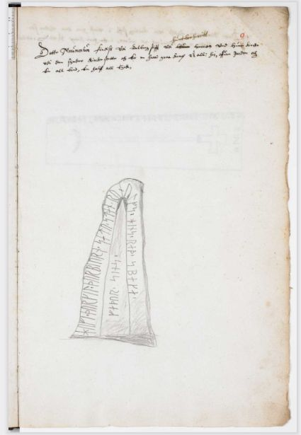
Diese Seite bietet Zugang zu zahlreichen historischen Manuskripten. Sie wurde im April 2010 ins Leben gerufen, befindet sich noch immer im Aufbau, so dass auch nach und nach weitere Handschriften und Bilder eingestellt werden.

Am Mittwoch, 28.09.2022, war ich in der Universität Kopenhagen in der Arnamagnæanske Samling und durfte das Original - AM 367 fol. - in Händen halten und eingehend fotografieren. Man bat mich aber von einer Veröffentlichung meiner Fotos abzusehen und stattdessen auf die digitalisierte Handschrift über www.handrit.is zu verweisen.
Ole Worm (*13.05.1588 - 31.08.1654, Arzt, Universalgelehrter und der Begründer der Runologie)
 Bildquelle:
Digitale Sammlung der Königlichen Bibliothek Kopenhagen -
Lizenz:
Public Domain
Bildquelle:
Digitale Sammlung der Königlichen Bibliothek Kopenhagen -
Lizenz:
Public Domain
hatte den dänischen König Christian IV. (*12.04.1577 - 28.02.1648)
 Bildquelle:
Wikipedia - Lizenz:
Public Domain
Bildquelle:
Wikipedia - Lizenz:
Public Domain
dazu bewogen am 11. August 1622 einen Brief an die Bischöfe von Dänemark und Norwegen zu senden, um darüber die Pfarrer im Land aufzufordern alle Informationen zu Denkmälern, Runensteinen, Grabhügel usw. an ihn zu melden, um die älteste Geschichte Dänemarks zu beleuchten. Unterstützer oder gar treibende Kraft war wohl Christian Friis (*4. November 1581 auf Gut Krastrup in Farstrup - 01. Oktober 1639, dänischer Adliger und königlicher Kanzler).
 Bildquelle:
Wikipedia - Lizenz:
Public Domain
Bildquelle:
Wikipedia - Lizenz:
Public Domain
Der Originaltext dieses Briefes lautet auszugsweise: "Wor gunst tillforn. Wy bede Eder och wille, at I Eders mueligste flid ahnwender allewegne wdj Eders stigt att opsøge och antegne alle slags antiquiteter och documenter effter medfølgende fortegnelsis indhold, och att I saadanne med flid lader optegne och engang inden Paaske førstkommendis wdj wortt cantzelie lader indleffuere. Dermed skie wor willghe. Befalendis Eder Gud. Skreffuitt paa wortt [slott] Kiøbenhaffn, den 10. augusti anno 1622. Vnder vort signett.Christian."
Laut den "Indberetninger fra Præsterne i Aalborg Stift 1638" - innerhalb von "Samlinger til Jydsk Historie og Topografi udgivne af det Jydske historisk-topografiske Selskab, 4. række. I. bind redigeret af S. Nygård, 1911-14" - aufbereitet von Arkivassistent, cand. mag. Hans Knudsen (*01.07.1882 - 05.05.1946, Archivar) - S. 103 / S. 33 in der pdf-Datei) hat der damalige Pfarrer in Hune Jacob Søffrensønn folgenden Bericht an Ole Worm abgegeben: "...Sønden i Hun kirckegaards diggit er en steen med nogle runebogstaffuer paa, som er tillforn angiffiien och lest. Jacob Søffrensønn. Egen haandt." Übersetzung: "Südlich des Kirchhofdeichs von Hune befindet sich ein Stein mit einigen Runenbuchstaben darauf, die angedeutet und gelesen werden können. Eigenhändig Jacob Søffrensønn."
Der Eintrag von Jacob Søffrensønn findet sich auch in den "Præsteindberetninger til Ole Worm i Ålborg og Ribe Stifter 1625-42" auf der S. 32 (S. 69 in der pdf-Datei) im Kapitel "Ålborg stift 1638".
Ole Worm hat die Rückmeldung des Pfarrers in seinem bedeutenden Runenwerk "Danicorum Monumentorum Libri Sex, Hafniae, 1643" aufbereitet. Auf der Seite 291 hat er die Zeichnung von Jon Skonvig in Form dieses Metallschnitts wiedergegeben:
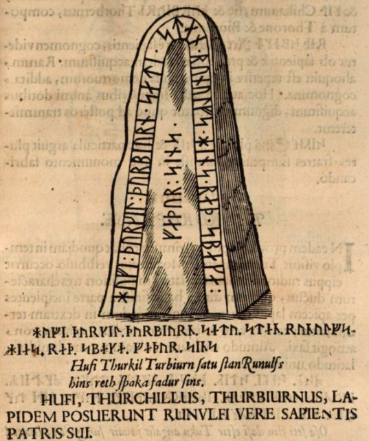
Dieser Screenshot findet sich in einer digitalisierten Ausgabe im Internet über die Bayerische Staatsbibliothek / MDZ Münchener DigitalisierungsZentrum Digitale Bibliothek - urn:nbn:de:bvb:12-bsb10800415-0 - abgerufen 30.11.2022
Der Runenstein sollte aufgrund einer königlichen Verfügung vom 9.2.1652 nach Kopenhagen versandt werden (siehe: Nordisk Tidsskrift for Oldkyndighed, Band 1, 1832, S. 324 ff. - S. 326 "Manderujp Due til Ørum; Hunebye-Stenen". Dieser Anweisung kam man in Hune jedoch nicht nach. Seitens Kopenhagen wurde diesbezüglich nicht nachgehakt, da dort 1654 die Pest ausbrach, die noch im selben Jahr Ole Worm den Tod brachte.
Die nächste Erwähnung des Runensteins findet sich bei Johannes Meier (*1605/06 - 1659/60, Lehrer und Verfasser) in seinem Werk Liber monumentorum Danicorum, qvi monumenta Danica Olai Wormii partim emendat partim locupletat (pdf-Datei anhand eigener Fotos von mir erstellt) von 1654 (Blatt 23) - Königlichen Bibliothek in Kopenhagen - GKS 2371 kvart
 Bildquelle:
Wikipedia - Lizenz:
Public Domain
Bildquelle:
Wikipedia - Lizenz:
Public Domain
hinzugefügt worden sein. Text und Zeichnungen der Handschrift - auch im Zusammenspiel - sind ansehnlicher ausgeführt als in NKS 799.
In der Königlichen Bibliothek in Kopenhagen hat sich von Johannes Meier aber auch noch eine zweite Handschrift erhalten - NKS 799 kvart - Joh. Mejeri Monumenta Runica in Dania (pdf-Datei anhand eigener Fotos von mir erstellt). Deren Entstehungsdatum ist nicht bekannt. Der Runenstein findet sich auf Blatt 22.


#/media/Datei:Fotoreproductie_van_een_schilderij,_voorstellende_een_portret_van_Christian_Friis_til_Kragerup_Christian_Friis_(til_Kragerup)_(titel_op_object),_RP-F-2001-7-742-16.jpg){kind=link}


NKS 799 kvart - Joh. Mejeri Monumenta Runica in Dania - Papier - 44 Blatt, Blatt 41-44 unbeschrieben, aus dem 18. Jahrhundert, vormals Nr. 70 in der Manuskript Sammlung von Peder Frederik Suhm (*18.10.1728 - 07.09.1798)
 Bildquelle:
Wikipedia - Lizenz:
Public Domain
Bildquelle:
Wikipedia - Lizenz:
Public Domain
Es handelt sich um
ein Büchlein mit einfachem Pappeinband, der Buchrücken ist aus Leder und
verstärkte Ecken aus Leder weist der Buchdeckel auf. Es hat die
Maße: H: ca. 20
cm / B: ca. 17 cm / D: ca. 1,5 cm. Zu den einzelnen Zeichnungen im Büchlein
wurde ein einfacher Maßstab abgebildet.
Bei beiden Exemplaren
weist immer das rechte Blatt der Doppelseite in der oberen Ecke eine mit
Bleistift geschriebene Seitenzahl auf. Diese beiden Werke sind Abschriften von
früheren Werken, die die Zeit nicht überdauert haben.
Vielleicht sind sie in
Kopenhagen beim
Großbrand von 1728
vernichtet worden, als neben zahlreichen privaten Beständen auch ca.
35.000 Bücher der Kopenhagener Bibliothek ein Raub der Flammen wurden!
Die
GKS 2371 kvart soll laut
Prof. Ludv. F. A. Wimmer
(*07.02.1839 -
29.04.1920, Philologe und Runenforscher
-
link-LIVES -
Politiets registerblade
-
Bestattungsprotokoll)
 Bildquelle:
Fotografie zw. 1877-1900 von Fotograf Hansen & Weller
-
Det Kgl. Biblioteks billedsamling - Lizenz:
Public Domain
Bildquelle:
Fotografie zw. 1877-1900 von Fotograf Hansen & Weller
-
Det Kgl. Biblioteks billedsamling - Lizenz:
Public Domain
und seinen Infos von Christian Walter Bruun (*10.12.1831 - 28.02.1906, Königlicher Oberbibliothekar - link-LIVES)
 Bildquelle: Fotografie
um 1880 von Fotograf J. Petersen
(*19.03.1829 -
01.02.1905) -
Det Kgl. Biblioteks billedsamling - Lizenz:
Public Domain
Bildquelle: Fotografie
um 1880 von Fotograf J. Petersen
(*19.03.1829 -
01.02.1905) -
Det Kgl. Biblioteks billedsamling - Lizenz:
Public Domain
von Niels Foss selbst abgeschrieben worden sein. Er hat die Texte laut den Studien von Erik Moltke (*04.04.1901 - 19.10.1984, Runologe, Historiker - link-LIVES)
 Bildquelle: Scan von Buchumschlag "Runerne i Danmark og ders
oprindelse" - Erik Moltke - 1976 - Lizenz:
CC-BY-SA
Bildquelle: Scan von Buchumschlag "Runerne i Danmark og ders
oprindelse" - Erik Moltke - 1976 - Lizenz:
CC-BY-SA
offenbar überarbeitet, verkürzt oder geändert und seine eigene
Orthografie eingebracht (z.B. alt: haffuer - bei Foss: haver / tyck/tyk /
kircke/kirke / oc/og u.a.). Von
Niels Foss hat sich in der Königlichen Bibliothek
in
Kopenhagen dieses handschriftliches Werk "Nogle
Artikler fra Storfyrsten af Moscow, tilsendte Kong Christian II, ang. Grændserne
imellem Norge, Sverrig og Rusland, samt andet meere"
erhalten, worüber man mal selbst die Handschriften abgleichen kann.
In der
NKS 799 kvart hingegen steht auf der Seite 37 links unten "Niels
Knudsen Jerne" und seine Handschrift lässt vermuten, dass er die
gesamte Abschrift angefertigt hat. Er war offenbar ein professioneller Schreiber
und könnte mit dem Niels Knudsen identisch sein, der
1728 "Skriverkarl" auf dem Holmen (Stadtviertel von
Kopenhagen) war, also ein Mann der schnell viele Texte schreiben und liefern
konnte. Er wurde am 08.11.1737 zum "ekvipageskriver"
ernannt. Es scheint, dass er sich, entgegen
Niels Foss,
sehr eng an das Original gehalten hat.
Offenbar gab es laut dem Katalog über die
Büchersammlung
von
Peter
Hansen Resens (*17.06.1625 -
01.06.1688) "Bibliotheca
Regiæ Academiæ Hafniensi donata" Hafniæ (Kopenhagen) von
1685 - siehe
S. 273 - früher noch ein drittes Werk von
Johannes Meier mit dem Titel "Johan. Meieri
liber MS. de Monumentis Runicis sive antiqvis Danicics".
Quellen:
Erik
Moltke -
Jon Skonvig og de andre runetegnere. Et bidrag til runologiens historie i
Danmark og Norge I-II,
1956-58
Band 2
-
Kapitel 13
Zwischen Montag, 26.09.2022, und Mittwoch, 28.09.2022, habe ich in der Königliche Bibliothek - Den sorte Diamant - in Kopenhagen - u.a. diese beiden alten Handschriften nach Online-Vorbestellung zur Ansicht erhalten. Ich durfte mir Aufzeichnungen machen, sie aber auch uneingeschränkt fotografieren. Ich habe sie mit dem Smartphone komplett als Doppelseiten fotografiert und daraus jeweils eine pdf-Datei erstellt. Vielleicht hat ja jemand Bedarf an diesen seltenen Ausgaben, die aufgrund ihres Alters keinem Urheberrrecht mehr unterliegen.
Peder Hansen Resen (*17.06.1625 - 01.06.1688, Jurist und Historiker)
 Bildquelle:
Wikipedia - Lizenz:
Public Domain
Bildquelle:
Wikipedia - Lizenz:
Public Domain
Er hat mit dem von ihm über 20 Jahre gesammelten Material das großartige Werk "Atlas Danicus", bestehend aus letztlich 39 Folianten, geschaffen. Nur geringe Teile wurden aber schon zu seiner Lebzeit gedruckt. Die Folianten wurden wenige Jahre nach seinem Tod 1692 an die Königliche Bibliothek Kopenhagen übergeben. Aufbewahrt wurden sie auf dem Dachboden der Trinitatis Kirche. Dort wurden sie fleißig studiert, abgeschrieben und zeitweise ausgeliehen. Leider wurde dann ein Großteil davon beim Kopenhagener Großbrand 1728 zerstört. Es hat sich neben einigen Originalseiten - siehe Arnamagnäanische Sammlung - AM 359 fol. / AM 360 fol. / AM 361 fol. und AM 362 fol. (digitalisiert) - nur eine (verkürzte) Abschrift und außerdem Kupferstiche von etwa 200 Städteansichten aus der Vogelperspektive erhalten. Originale dieser AM 359/360/361 fol sind über die Universität Kopenhagen - Institut for Nordiske Studier og Sprogvidenskab (NorS) - AM 359 fol / AM 360 fol / AM 360 fol (Karten) / AM 361 fol - in sw abrufbar. Eine zweite (verkürzte) Ausgabe war von Vincent Lerche (*04.04.1666 - 28.07.1742, Jurist, Architekt) beauftragt worden, diese wurde aber beim Brand von Schloss Christiansborg im Jahr 1794 vernichtet.
In der Königlichen Bibliothek in Kopenhagen wird seit 1803 in der Sammlung Uldall (186 folio) diese einzige verbliebene Ausgabe, die in den 1750er Jahren durch den Hofbaumeister Laurids de Thurah (*04.03.1706 - 06.09.1759)
 Bildquelle:
Wikimedia - Lizenz:
Public Domain
Bildquelle:
Wikimedia - Lizenz:
Public Domain
aus verstreuten Resten des Atlas Danicus in 7 Bänden rekonstruiert worden war, aufbewahrt:
Wie diesem Titel zu entnehmen ist, gehörte dieses Exemplar vormals Adam Gottlob Graf von Moltke (*10.11.1710 - 25.09.1792, Staatsmann, Diplomat)
 Bildquelle:
Wikimedia - Lizenz:
Public Domain
Bildquelle:
Wikimedia - Lizenz:
Public Domain
Nach dessen Tod erwarb Herman Treschow (*11.12.1739 - 02.05.1797, Professor für Theologie, Pfarrer) diese Ausgabe. Peter Uldall (*29.06.1743 - 11.11.1798, Jurist, Theologe)
 Bildquelle:
Wikimedia - Lizenz:
Public Domain
Bildquelle:
Wikimedia - Lizenz:
Public Domain
wiederum kaufte sie für 170 Rigsdaler (Rigsdaler zu 24 Skilling - damals 1 ½ Mark) nach dessen Ableben. Er hatte aber nicht lange Freude daran, denn er starb ein Jahr später an einem Schlaganfall. Sein Sohn, Justizrat W. A. Uldall, schenkte diese Ausgabe der Kgl. Bibliothek im Jahr 1803, wo dieses großartige Werk noch heute verwahrt wird - Ein Band hat übrigens die stolze Größe H/B/D von 40 cm x 29,5 cm x 9,5 cm.
Im Atlas VI. ist auf der Seite 47 ein Eintrag / Zeichnung vom Runenstein enthalten, die ich am 28.09.2022 vor Ort fotografieren durfte.


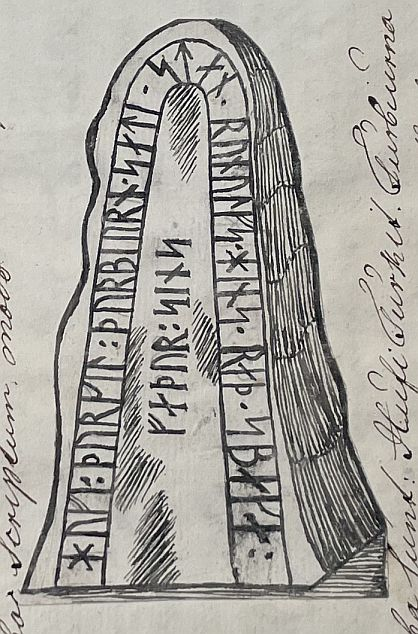

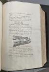
Übersetzung: "In der Hvetbo Harde werden die sogenannten Hvetbo-Flunder, oder auf Dänisch Hvetboherreds Flynder, zweimal im Jahr gefangen im Frühjahr und im Herbst. An derselben Stelle im Dorf Hune befindet sich ein geschnitzter Stein in Form einer Säule, der mit Runen wie folgt beschrieben wird:
Zeichnung
Der Text lautet: Hufi Turkil Turbiurna satu sten Runulfs hins reth spaka fadur sins. Bedeutung: Hove, Thorkil und Thorbiorn errichteten den Stein für Runulf, ihren weisen Vater."
Quelle: "Resens Atlas Aalborg Stift, Købstæder Herreder og Sogne, Sæby Museum 1982, Peder Hansen Resen, Atlas Danicus VI, A: Aalborg Stift, Udgivet af Thomas W. Lassen, i dansk Oversættelse ved Erik Bøegh" - Darüber von mir aus dem Dänischen ins Deutsche übersetzt.
Zeichnung von Søren Abildgaard (*18.02.1718 - 02.07.1791, Zeichner, Kupferstecher und Geologe)
 Bildquelle:
Jellingprojektet - Lizenz:
Public Domain -
http://www5.kb.dk/images/billed/2010/okt/billeder/object444188/da/
Bildquelle:
Jellingprojektet - Lizenz:
Public Domain -
http://www5.kb.dk/images/billed/2010/okt/billeder/object444188/da/
aus dem Jahre 1766, Originalgröße: 22 x 33 cm.
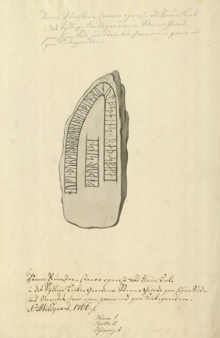
Sein handschriftlicher Text darunter: "Denne Runesteen staar opreist ved Huun Kirke i det sydlige Kirke Gaardens Steen-Giærde paa høire Side ved Stenten, huor man gaar ind paa Kirkegaarden - S: Abildgaard, 1766". Der identische Text steht mit Bleistift geschrieben auch noch einmal über der Zeichnung, sehr ungewöhnlich bei seinen Zeichnungen.
Übersetzung: "Dieser Runenstein steht aufrecht bei der Hune Kirche im Steinzaun des südlichen Kirchhofs auf der rechten Seite neben dem Stein, wo man den Kirchhof betritt."
Der Digitalen Sammlung des Nationalmuseums Kopenhagen entlehnt - Lizenz: Public Domain
Literaturhinweis: Poul Grinder-Hansen - Søren Abildgaard (1718-1791) - Fortiden på tegnebrættet - Katalog Nr. 411 - S. 438
Erik Pontoppidan (der Jüngere, *03.09.1698 - 20.12.1764, dänisch-lutherischer Bischof, Theologe und Autor)
 Bildquelle:
Wikipedia - Lizenz:
Public Domain
Bildquelle:
Wikipedia - Lizenz:
Public Domain
führt den Runenstein in seinem Werk "Den Danske Atlas" - Tomus V, Cap. 3, S. 302 (c) (S. 57 c in der pdf-Datei) von 1769 an: "I den syndre Kirkegaards Steen-Dige staaer en gammel Runesteen, som Hufi, Thurkil und Thurbiörn satte over deres Fader Runolf hin retvise." - (übersetzt): "In der südlichen Steinumfriedung des Kirchhofs steht ein alter Runenstein, errichtet von Hove, Thorkil und Thorbiörn für ihren Vater Runolf, den Gerechten."
Johan Gustav Liljegren (*27.02.1791 -02.06.1837, schwedischer Nationalarchivar und Archäologe)
 Bildquelle:
Schwedisches Reichsarchiv - Lizenz:
Public Domain
Bildquelle:
Schwedisches Reichsarchiv - Lizenz:
Public Domain
hat den Runensteine in seinem Werk "Run-Urkunder" von 1833 auf der S. 171 mit der Nummer 1506 aufgeführt.
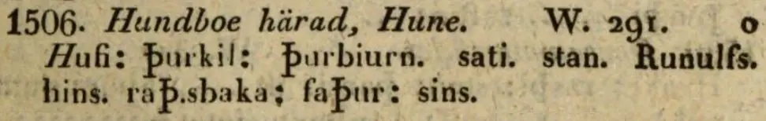
Quelle: Bayerische Staatsbibliothek - urn:nbn:de:bvb:12-bsb10431145-1 - abgerufen am 07.11.2022
Eine frühe Zeichnung wurde durch Rasmus Henrik Kruse (*07.08.1796 - 30.05.1877, Landschaftsmaler - link-LIVES - Heirat 21.12.1851)
 Bildquelle:
Det Kgl. Biblioteks billedsamling - Lizenz:
Public Domain
Bildquelle:
Det Kgl. Biblioteks billedsamling - Lizenz:
Public Domain
im Jahr 1841 gefertigt. Er hat sie mit seinen handschriftlichen Ausführungen in seine Abhandlung "Nørre Jyllands Mærkværdigheder i det 19. Aarh. Hs. Bd 1-2 (med) Tillæg 1-2" aufgenommen (Band I, 1843, S. 4-5 / Band II, 1852, Zeichnung Nr. 1, S. 28). Dieses Werk wird heute in Kopenhagen, Nationalmuseum, Antikvarisk-Topografisk Arkiv, aufbewahrt. Dort durfte ich am Dienstag, 27.09.2022, zu Gast sein und die vier Bände in Händen halten und fotografieren.
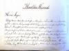 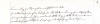 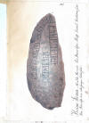 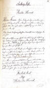


Carl Christian Rafn (*16.01.1795 - 20.10.1864, Altertumsforscher - link LIVES - Bestattungsprotokoll)
 Bildquelle: Zeichner
Magnus Petersen -
Det Kgl. Biblioteks billedsamling - Lizenz:
Public Domain
Bildquelle: Zeichner
Magnus Petersen -
Det Kgl. Biblioteks billedsamling - Lizenz:
Public Domain
führt im Jahre 1856 in seinem Werk "Antiquités de l'Orient, monuments runographiques", S. 220, die Runenzeichen als Text an:
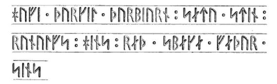
Er orientiert sich dabei an der obigen Zeichnung aus dem Jahr 1841 von Rasmus Henrik Kruse (*07.08.1796 - 30.05.1877, Landschaftsmaler).
Prof. P. G. Thorsen (*07.08.1811 - 06.05.1883, Bibliothekar, Runenforscher und Historiker - link-LIVES - Artikel: Levnedsbeskrivelser af de ved Københavns Universitets Firehundredaarsfest promoverede Doktorer, Illustreret Tidende 1882, Nr. 1235 - vom 27.05.1833 / Grabstein in Varde / Eheschließung in Varde am 19. August 1848)
 Bildquelle: Fotografie zw. 1863-1900
von
Fotograf Budtz Müller (*26.12.1837 -
30.12.1884) -
Det Kgl. Biblioteks billedsamling - Lizenz:
Public Domain
Bildquelle: Fotografie zw. 1863-1900
von
Fotograf Budtz Müller (*26.12.1837 -
30.12.1884) -
Det Kgl. Biblioteks billedsamling - Lizenz:
Public Domain
bringt in seinem Werk "De danske runemindesmærker beskrevne og forklarede, anden Afdeling, Jyllands Runemindesmærker, II. Text, 1880, S. 183" seine Beschreibung des Runensteins. In dem im Vorjahr 1879 erschienenen "Band I. Afbildninger, Nr. 78" findet sich eine Zeichnung von Prof. Julius Magnus Petersen (*04.09.1827 - 31.01.1917, Archäologischer Zeichner und Restaurator - link-LIVES - Bestattungsprotokoll)
 Bildquelle: Fotografie
von 1903 von Fotograf Marius Christensen
(*24.06.1874 -
25.06.1907) -
Det Kgl. Biblioteks billedsamling - Lizenz:
Public Domain
Bildquelle: Fotografie
von 1903 von Fotograf Marius Christensen
(*24.06.1874 -
25.06.1907) -
Det Kgl. Biblioteks billedsamling - Lizenz:
Public Domain
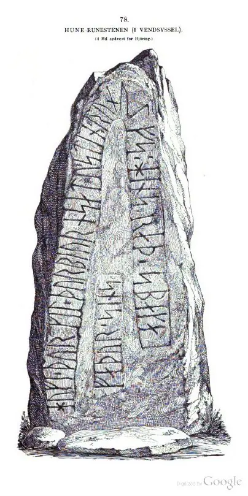
P. G. Thorsens Nachlass (Bezeichnet als: P. G. Thorsens optegnelser, tegninger m.m. vedrørende runer og runemindesmærker - überführt aus der Kopenhagener Universitätsbibliothek 1929 - Gemäß Ministerialschreiben vom 04.03.1929; früher benannt als Additamenta 612 kvart) - findet sich in der Königlichen Bibliothek unter NKS 3296 kvart (in mehreren einzelnen Pappschachteln). In der Pappschachtel Nr. 5 ist zu Hune etwas dabei. Zum einen eine Skizze mit beschreibendem Text die auf den 08.11.1838 datiert ist und die m.E. von Thorsen selbst erstellt wurde. Daneben eine Zeichnung des Runensteins, die wohl von Rasmus Henrik Kruse (*07.08.1796 - 30.05.1877, Landschaftsmaler) gefertigt oder dessen Zeichnung von 1841 nachempfunden wurde.


In der Pappschachtel mit der Nummer 17 findet sich dann noch diese tolle Zeichnung von Magnus Petersen (*04.09.1827 - 01.02.1917, Archäologischer Zeichner und Restaurator) die er mit dem Datum 06.07.1870 versehen hat. Da stand der Runenstein noch an der Stelle - im Steinzaun des südlichen Kirchhofs auf der rechten Seite neben dem Stein, wo man den Kirchhof betritt - die bereits von Søren Abildgaard - siehe oben - im Jahre 1766 beschrieben wurde.

Prof. Ludv. F. A. Wimmer (*07.02.1839 - 29.04.1920, Philologe und Runenforscher - link-LIVES - Politiets registerblade - Bestattungsprotokoll)
Bildquelle:
Fotografie zw. 1877-1900 von Fotograf Hansen & Weller
-
Det Kgl. Biblioteks billedsamling - Lizenz:
Public Domain
hat den Runenstein mit Text und Zeichnung in seinem großformatigen Werk "De danske runemindesmærker undersøgte og tolkede af Ludv. F. A. Wimmer, Andet Bind, Runestenene i Jylland og på øerne. 1899-1901, Nr. 16, S. 121" abgehandelt - eigener Scan aus der in meinem Besitz befindlichen Ausgabe. Er hat den Runenstein persönlich vor Ort am 18.August 1878 untersucht.
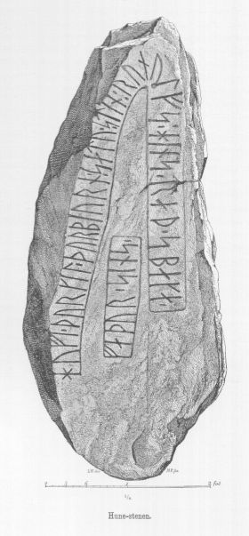
Diese Zeichnung wurde von Zeichnungen von Magnus Petersen (*04.09.1827 - 01.02.1917, Archäologischer Zeichner und Restaurator) ausgeführt.
Ludv. F. A. Wimmer hat seine jahrelangen Aufzeichnungen der
"Kgl.
Bibliotek" in
Kopenhagen
überlassen. Ein
Verzeichnis darüber wurde 1915 in Buchform herausgegeben
"Collectio
runologica Wimmeriana : Fortegnelse over
Ludv.
F.
A.
Wimmers runologiske o.
a.
Samlinger
i Det kgl.
Bibliotek"
-
In seinen Unterlagen in der Königlichen Bibliothek befinden sich unter "III - Originaltegninger af de danske Runemindesmærker, udførte paa Undersøgelsesrejserne af Magn. Petersen og kontrollerede paa Stedet af Ludv. Wimmer, samt Prøvetryk af de paa Grundlag af de nævnte Tegninger, Aftryk o. s. v. til De danske Runemindesmærker" udførte Afbildninger med Wimmers Rettelser"


zu dem Runenstein von Hune unter der Nr. 32 Aufzeichnungen von 1878 und 1883, wobei ich am 27.09.2022 diese Zeichnung von Magnus Petersen - datiert auf den 14.08.1878 - fotografieren durfte.

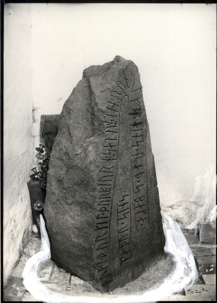
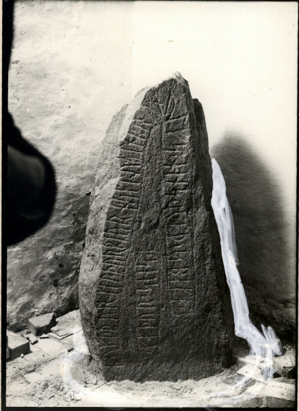
Fotos von Erik Moltke (*04.04.1901 - 19.10.1984, Runologe, Historiker - link-LIVES)
Bildquelle: Scan von Buchumschlag "Runerne i Danmark og ders
oprindelse" - Erik Moltke - 1976 - Lizenz:
CC-BY-SA
vom 16.06.1931.
Der Digitalen Sammlung des Nationalmuseums Kopenhagen entlehnt - Beide Fotos Lizenz: CC-BY-SA
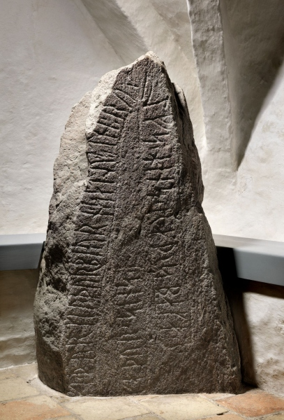
Im Vorfeld zu dem 2016 erschienenen Buch von Lisbeth M. Imer (*1973, Runologin am Nationalmuseum Kopenhagen) "Danmarks Runesten - en fortælling" reiste sie mit dem Fotografen Roberto Fortuna zur Bestandsaufnahme durch die Lande. Dieses Foto des Runensteins wurde dabei im März 2012 von Herrn Fortuna aufgenommen.
Der Digitalen Sammlung des Nationalmuseums Kopenhagen entlehnt - Lizenz: CC-BY-SA
Hier der Eintrag in der dänischen Runendatenbank mit allen Informationen.
Die Informationen in "Fund og Fortidsminder" zu dem Runenstein finden sich hier. Darin ist inzwischen dieser Zustandsbericht des Steinrestaurators Leif Vognsen aus dem Jahr 2018 eingebettet.
Über diesen Link finden sich zu dem Runenstein Informationen des Forschungsprojektes "Runes" der Akademie der Wissenschaften zu Göttingen.
In Danmarks Kirker ist die Region "XI. Hjørring" aber leider noch nicht veröffentlicht, so dass man dort vergeblich nach Informationen zu dieser Kirche sucht.
Dafür kann man über die Homepage der Kirche gleich zwei dänischsprachige Broschüren mit dem Titel "Hune Kirke - Renovering og ny Udsmykning 2001 - 2024" und "Hune Kirke Ny udsmykning 2024" als pdf-Datei abrufen und herunterladen.
Literaturhinweise:
Marius Kristensen (*27.04.1869 - 02.11.1941, Dr. phil. Hochschullehrer, Dänischer Sprachforscher - link-LIVES - Begravelsesprotokoller)
 Bildquelle:
Denstoredanske.lex - Lizenz:
Public Domain
Bildquelle:
Denstoredanske.lex - Lizenz:
Public Domain
Beitrag in
Danske Studier 1930 - En opkaldelsesskik paa svenske og
bornholmske Runestene - S. 150-156 -
Innerhalb der
Abhandlung findet sich ein Beitrag zu den Namen Thorkel und Thorbjørn
die in der Hune Inschrift (zu deutsch: Thorkil und
Thorbiorn) und in
Dänemark einmalig vorkommen.
05.11.2023
Heute erst habe ich den Artikel vom 03.01.2023 von Lisa Lamm von National Geographic mit dem Titel "Wikingerhalle aus der Zeit von König Blauzahn entdeckt" im Internet gefunden. Darin heißt es u.a. : "So auch aktuell in Hune, einem kleinen Dorf in Nordjütland. Dort entdeckten Archäologinnen und Archäologen eine große Wikinger-Halle aus der Zeit von Harald Blauzahn, einem dänischen Wikingerkönig, der Ende des zehnten Jahrhunderts n. Chr. neben Dänemark auch Norwegen regierte."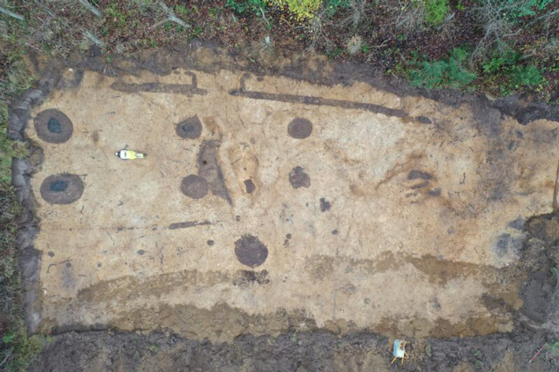
Foto von Nordjyske MuseerMeine ergänzenden Recherchen erbrachten noch diese Informationen zu dem Fund.
Bei Wohnungsbauarbeiten Ende Dezember 2022 in der Nähe von Hune, einem Dorf in der Gemeinde Jammerbugt in Nordjütland wurde eine große Halle aus der Regierungszeit von König Harald Blauzahn freigelegt. Die Halle war bis zu 40 Meter lang und 810 Meter breit, wobei 1012 Eichenpfosten das Dach stützten. Sie haben einen rechteckigen Querschnitt und messen bis zu 90×50 cm. Der Saal diente wahrscheinlich als wichtiger Ort für politische Versammlungen, zur Beherbergung von Besuchern und als Mittelpunkt sozialer Aktivitäten im gesellschaftlichen Leben der Gemeinde. Die Halle, die bisher nur teilweise ausgegraben wurde, ist schon jetzt eine Sensation. Dies ist der größte wikingerzeitliche Fund dieser Art seit mehr als zehn Jahren, sagte Thomas Rune Knudsen, Grabungsleiter und Archäologe vom Historischen Museum von Nordjütland. Wir haben so etwas hier in Nordjütland noch nicht gesehen. Doch wem gehörte das besondere Gebäude? Bei der Beantwortung dieser Frage könnte ein Runenstein helfen, der in der Nähe der Halle gefunden wurde und aus derselben Zeit wie die Halle stammt. Die Inschrift des Steines Hove, Thorkil (und) Thorbiorn setzten den Stein Runulfs des Ratsweisen, ihres Vaters gibt laut Knudsen zumindest einen Hinweis darauf, welche Familie die Region zu der Zeit bewohnte, in der auch die Halle gebaut wurde. Der Runenstein wird in die Zeit von 970 - 1020 datiert.
Dass das große Gebäude der Familie eines Ratsherrn gehört haben könnte, würde auch sonst passen. Der Runenstein und die Halle repräsentieren dieselbe Gesellschaftsschicht und gehören beide zur Elite der Gesellschaft, so Knudsen. Ganz sicher könne man die Halle der Familie allerdings noch nicht zuordnen. Und auch über Runulf selbst wisse man noch wenig er sei aber dennoch eine Person, die geschichtlich von großem Interesse sein könnte. Er ist jemand, der in der Wikingerzeit zur gesellschaftlichen Elite gehörte und jemand, der mit Sicherheit den damaligen König getroffen haben könnte, vielleicht sogar in der Halle in Hune, so Knudsen.
Weitere Hinweise erhofft sich das Team durch die Freilegung zusätzlicher Gebäude in der Nähe. Ein Hallengebäude dieser Art steht selten allein, sagt der Archäologe. Denn gerade die Region Nordjütland sei zur Zeit der Wikinger ein besonderer Teil des Landes gewesen. Am Limfjord, der sich dort befindet, sammelte sich die Wikingerflotte, bevor sie sich auf Raubzüge und Reisen nach England und anderswo begab, so Knudsen. Durch weitere Funde kann dann vielleicht auch beantwortet werden, wer zu den Versammlungen in der Wikingerhalle lud und ob König Harald dort ebenfalls zu Gast war.
Auf Nachfrage bekam ich am 16.05.2024 von Torben Sarauw, Nordjyske museer, diese Auskunft: "Derzeit wird an der Veröffentlichung zu der Halle in Hune gearbeitet. Der Artikel erscheint Anfang nächsten Jahres in unserem Magazin Alabu, das Sie auf unserer Website finden. Die C14-Datierung hat gezeigt, dass die Halle aus dem 8. Jahrhundert stammt und leider nicht zeitgleich mit Harald Blauzahn (*um 910 - 01.11.985/86)." In der Ausgabe 2/2025 des Magazin Alabu ist allerdings kein solcher Artikel veröffentlicht worden.